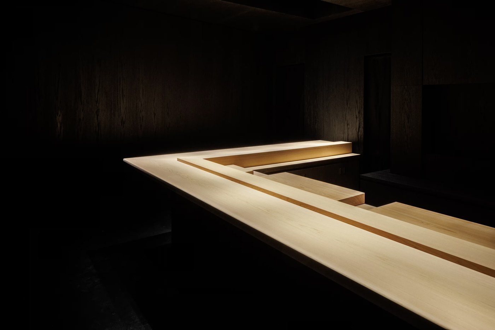
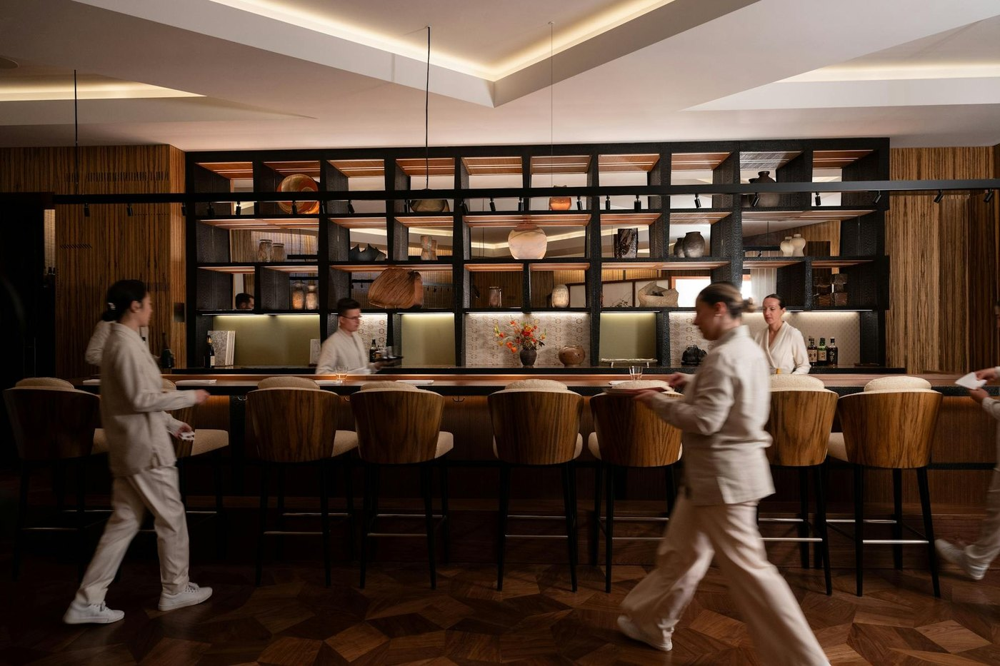
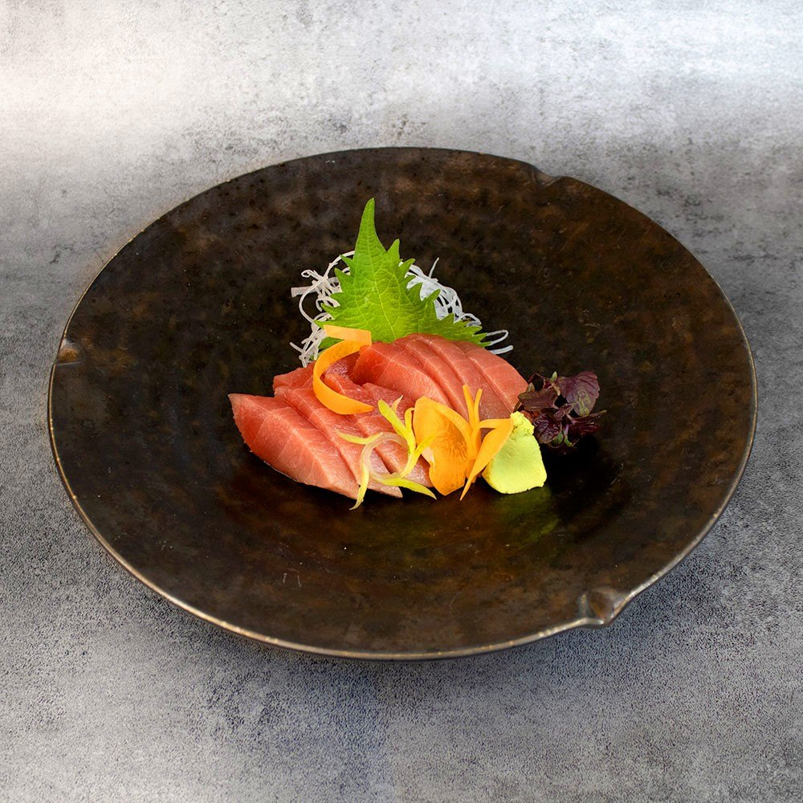
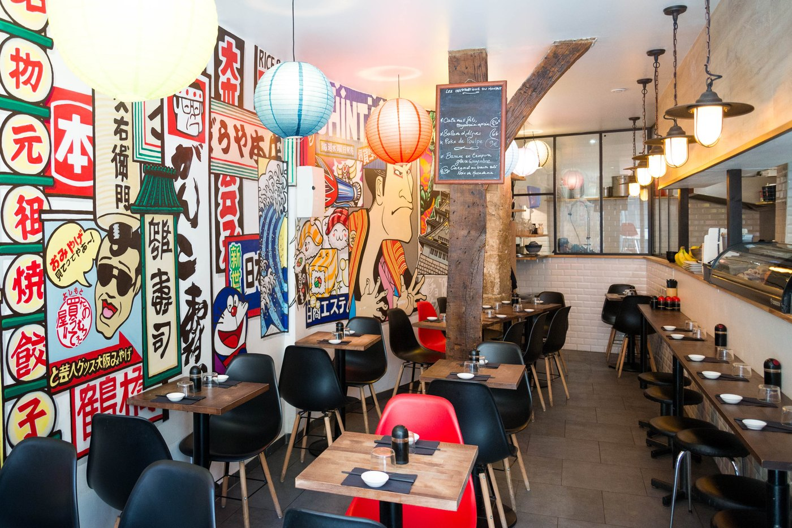

Meilleur sushi à Paris : 6 adresses en 2026
Du menu à 12 € rue Chabanais à l'omakase à 420 € du Cheval Blanc. Avec deux maisons étoilées que les sélections n'ont pas encore vues, et une adresse que tout le monde annonce cinq fois trop cher.

Le sushi parisien s'est scindé en deux mondes qui ne se parlent pas : d'un côté des comptoirs de quartier où l'on déjeune pour douze euros, de l'autre des omakase à trois cents. Voici six adresses qui couvrent les deux, avec pour chacune le prix relevé à la source, l'adresse exacte et les jours de fermeture.
L'essentielLe sushi à Paris en 2026
- Deux maisons étoilées : Hakuba, deux étoiles depuis mars 2026, et Hanada, une étoile obtenue quelques mois après son ouverture.
- Isami n'est pas une table à 200 € : son assortiment de quinze pièces est à 35 €.
- Yamamoto n'est pas une table à 150 € non plus : son menu du midi est à 12 €.
- Rice & Fish, ce sont deux enseignes et non deux salles : le sushi au 16 de la rue Greneta, les grillades au 22.
Ce que nous avons vérifié
Sur ce sujet, les prix publiés en ligne sont le premier problème. Nous avons repris chaque tarif aux cartes et aux menus des maisons, et l'écart avec ce qui circule est considérable, dans les deux sens : Isami est annoncé cinq fois trop cher, Yamamoto dix fois, tandis que Hakuba est annoncé à la moitié de son prix réel.
Deux distinctions manquent également partout : la deuxième étoile de Hakuba, obtenue le 16 mars 2026, et la première de Hanada, dans le même guide. Le reste, adresses et jours de fermeture, relève du contrôle habituel de notre grille.
Comprendre une carte de sushi
Trois mots suffisent à lire n'importe quelle carte. L'omakase, littéralement « je m'en remets à vous », est un menu unique que le chef compose selon l'arrivage : on ne choisit rien, et c'est le principe. Le nigiri est la pièce classique, une lame de poisson posée sur un doigt de riz vinaigré. Le chirashi est le même poisson, tranché et dispersé sur un bol de riz, presque toujours moins cher pour la même matière.
Deux détails distinguent une bonne maison. Le riz doit être servi à température du corps et non froid, ce qui suppose qu'il soit préparé en continu. Et la sauce soja doit être passée au pinceau par le chef, le nikiri, plutôt que servie en coupelle : lorsqu'on vous tend une coupelle avec des nigiri, la maison vous laisse corriger son assaisonnement.
Les 6 adresses
-
01
Isami
Paris 4e · Comptoir de l'île Saint-Louis
Une quinzaine de couvertsQuai d'Orléans, sur l'île Saint-Louis, Isami est depuis des années la référence des Parisiens qui savent. La salle est minuscule, l'itamae travaille au comptoir sous les yeux des clients, et il n'y a rien d'autre à regarder que ses mains.
Le point que les sélections se transmettent de travers, c'est le prix. On lit régulièrement 180 à 250 € par personne : c'est faux. Le Joh Sushi Moriawase, l'assortiment de quinze pièces de poissons et de fruits de mer, est affiché à 35 €. Isami n'est pas une table de luxe, c'est une très bonne table de quartier dont la réputation a dépassé le quartier.
Ce qui est vrai, en revanche, c'est la difficulté d'y entrer : la salle compte peu de places et la réservation est indispensable, parfois longtemps à l'avance.
Pour qui ? Ceux qui veulent du sushi sans mise en scène et sans addition à trois chiffres. Fermé le dimanche et le lundi.
- Adresse4 quai d'Orléans, 75004 Paris
- Téléphone01 40 46 06 97
- Ouverturedu mardi au samedi, 12 h à 14 h et 19 h à 22 h ; fermé dimanche et lundi
- Repère de carteassortiment de 15 pièces à 35 €
-
02
Hanada
Paris 7e · Omakase, dix couverts
1 étoile Michelin 2026Le comptoir en hinoki de Hanada, quai Voltaire. Photo Hanada. Ouvert à l'été 2025 au 15 quai Voltaire, Hanada a décroché une étoile au Guide Michelin 2026 en quelques mois, ce que la plupart des sélections n'ont pas encore enregistré. Masayoshi Hanada, originaire de Fukuoka, s'est formé dix ans au Japon avant d'arriver à Paris en 2013 ; il avait déjà été étoilé chez Sushi B en 2017.
La salle tient en une phrase : dix couverts, aucune fenêtre, une lumière blanche qui tombe sur un comptoir en hinoki, cyprès japonais, livré du Japon d'une seule pièce de deux cents kilos. Les photos et les vidéos sont interdites, ce qui, dans un restaurant de cette qualité, est une décision et non une coquetterie.
Il n'y a qu'un menu, un omakase à 350 € d'une vingtaine de services, construit autour du thon rouge de Méditerranée, de la truite d'Auvergne et de la pêche bretonne. Deux services par soir, à 19 h et à 21 h 30.
Pour qui ? Ceux qui veulent l'omakase dans sa forme la plus stricte, et qui acceptent de poser leur téléphone.
- Adresse15 quai Voltaire, 75007 Paris
- Distinction1 étoile au Guide Michelin 2026
- Menuomakase unique à 350 €, une vingtaine de services
- Ouverturedeux services le soir, à 19 h et 21 h 30 ; photos interdites
-
03
Hakuba
Paris 1er · Cheval Blanc Paris
2 étoiles Michelin depuis mars 2026
La salle de Hakuba, au Cheval Blanc Paris. Photo Caroline Dutrey pour Cheval Blanc Paris. Ouvert en mars 2024 au Cheval Blanc Paris, Hakuba a obtenu sa deuxième étoile à la cérémonie du Guide Michelin du 16 mars 2026. C'est le fruit d'une collaboration à trois : Takuya Watanabe, Arnaud Donckele et, à la pâtisserie, Maxime Frédéric.
Watanabe n'est pas un inconnu : il avait cofondé Jin en 2012, le comptoir de sushi parisien qui a tenu une étoile pendant des années. Hakuba est la suite de cette histoire, sur un format plus large : la maison parle de kaiseki-sushi, c'est-à-dire le déroulé d'un repas japonais construit autour du travail du poisson, avec des produits de l'Atlantique et des côtes françaises.
Le tarif est à la hauteur du projet et il est public : le menu Yume est à 420 €, avec un temaki d'oursin en supplément à 30 € et la truffe à 95 € ; les accords mets et vins vont de 195 à 495 €. Les fourchettes de 180 à 220 € qu'on lit ailleurs sont très en dessous du prix réel.
Pour qui ? L'occasion unique, préparée à l'avance. C'est la table la plus chère de cette page, et de loin.
- AdresseCheval Blanc Paris, 8 quai du Louvre, 75001 Paris
- Distinction2 étoiles au Guide Michelin, la seconde en mars 2026
- ÉquipeTakuya Watanabe et Arnaud Donckele ; Maxime Frédéric à la pâtisserie
- Menu« Yume » à 420 € ; accords mets et vins de 195 à 495 €
-
04
Yamamoto
Paris 2e · Rue Chabanais
Le chef y est depuis 25 ansRue Chabanais, parallèle à la rue Sainte-Anne, dans le quartier japonais de Paris. Le chef, Swan, tient la maison depuis vingt-cinq ans, s'est formé au Japon, et va choisir son poisson à quatre heures du matin pour le servir le soir même. On peut lui laisser carte blanche.
Ici encore, le prix qui circule est faux, et dans des proportions considérables : on lit 120 à 160 € par personne, alors que les menus vont de 21 à 27 €, avec un menu du midi à 12 € et une carte autour de 20 €. L'assortiment sushi-sashimi du soir est à 27 €.
La salle est petite et optimisée ; les places au comptoir sont les seules qui valent vraiment, parce qu'on y voit travailler.
Pour qui ? Le déjeuner de semaine, la table sans cérémonie, et de très loin le meilleur rapport qualité prix de cette page.
- Adresse6 rue Chabanais, 75002 Paris
- ChefSwan, dans la maison depuis vingt-cinq ans
- Prixmenu du midi à 12 € ; menus du soir de 21 à 27 €
- À demanderune place au comptoir, et la carte blanche au chef
-
05
Kiyomizu
Paris 8e · Près des Champs-Élysées
Menu déjeuner à 38 €
Un plateau de sashimi, chez Kiyomizu. Photo Kiyomizu. Rue Saint-Philippe du Roule, à cinq minutes des Champs-Élysées, Kiyomizu est une institution discrète du 8e. Décor sobre, salle calme, poisson choisi avec soin : c'est une maison qui ne cherche pas à se faire remarquer.
Les prix sont publiés et méritent d'être lus dans le bon sens. Le menu du déjeuner est à 38 €, décliné en version sashimi, bœuf japonais ou anguille grillée sur riz, avec des suppléments oursin et thon gras. Le soir, en revanche, le menu de dégustation Nabé monte à 76 € : ce n'est donc pas une adresse à 35-45 € toute la journée, comme on le lit.
À emporter, les bentos et chirashis maison tournent autour de 35 €, à commander à l'avance.
Pour qui ? Le déjeuner de travail dans le quartier, et ceux qui préfèrent le calme au comptoir. Fermé le dimanche, et pas de service le samedi midi.
- Adresse4 rue Saint-Philippe du Roule, 75008 Paris
- Téléphone01 45 63 08 07
- Ouverturedu lundi au vendredi 12 h à 14 h 30 et 19 h à 22 h ; samedi le soir ; fermé le dimanche
- Prixmenu du déjeuner 38 €, menu Nabé 76 € au dîner
-
06
Rice & Fish
Paris 2e · Deux enseignes rue Greneta
Makis à partir de 5,50 €
La salle de Rice & Fish, rue Greneta. Photo Rice & Fish. C'est l'adresse qui assume la fusion, et la seule de cette page où l'on vient pour s'amuser. Décor d'affiches japonaises, lanternes, salle bruyante : on est à l'opposé du silence de Hanada, et c'est le propos.
Une précision que les listes escamotent : les deux numéros de la rue Greneta ne sont pas deux salles du même restaurant mais deux enseignes différentes. Au 16, Rice, le bar à sushi ; au 22, Yaki, la maison de grillades. On ne mange pas la même chose selon la porte que l'on pousse.
Les prix sont les plus doux de cette sélection : les makis Krunchy, tempura de crevette et avocat, sont à 5,50 € les six pièces, les formules du déjeuner démarrent à 6,50 €, et un dîner complet se situe entre 30 et 40 € par personne.
Pour qui ? Les dîners entre amis, les makis créatifs, ceux qui ne cherchent pas l'orthodoxie. L'attente peut être longue aux heures de pointe.
- Adresse16 rue Greneta pour Rice, 22 rue Greneta pour Yaki, 75002 Paris
- Téléphone01 42 36 63 72
- Prixmakis à partir de 5,50 € les six ; dîner de 30 à 40 €
- Bon à savoirdeux enseignes distinctes, sushi d'un côté, grillades de l'autre
Un écart de prix de un à trente-cinq
Sur cette page, la même envie coûte 12 € ou 420 € selon la porte que l'on pousse. C'est le plus grand écart de toutes nos sélections parisiennes, et il ne recouvre pas seulement une différence de qualité : il recouvre deux métiers.
D'un côté, le comptoir de quartier, qui achète au marché le matin et sert à midi : Yamamoto, Isami, Kiyomizu au déjeuner. On y mange bien pour le prix d'un plat de bistrot. De l'autre, l'omakase, où le chef construit une vingtaine de services pour dix personnes, avec du thon rouge de Méditerranée et un comptoir en cyprès venu du Japon : Hanada, Hakuba. Le prix ne paie pas seulement le poisson, il paie le nombre de couverts.
La conséquence pratique est simple : ne comparez pas ces deux mondes. Un omakase à 350 € n'est pas dix fois meilleur qu'un menu à 35 €, il est autre chose.
Les 6 adresses en un tableau
Classées par prix croissant. Les montants sont ceux affichés par les maisons, relevés le 31 août 2026.
| Adresse | Arrondissement | Registre | Prix relevés | À savoir |
|---|---|---|---|---|
| Yamamoto | 2e | Traditionnel | Midi 12 €, soir de 21 à 27 € | Le chef Swan, dans la maison depuis 25 ans |
| Rice & Fish | 2e | Fusion | Makis 5,50 € ; dîner de 30 à 40 € | Deux enseignes rue Greneta : Rice et Yaki |
| Isami | 4e | Traditionnel | 15 pièces à 35 € | Très peu de places ; fermé dimanche et lundi |
| Kiyomizu | 8e | Traditionnel | Déjeuner 38 €, menu Nabé 76 € | Fermé le dimanche ; salle calme |
| Hanada | 7e | Omakase | 350 € | 1 étoile 2026 ; 10 couverts ; photos interdites |
| Hakuba | 1er | Kaiseki-sushi | Menu Yume 420 € | 2 étoiles depuis mars 2026 ; Cheval Blanc Paris |
Questions fréquentes
Combien coûte un sushi à Paris en 2026 ?
L'écart est de un à trente-cinq sur cette page, et c'est ce qui rend les fourchettes générales inutiles. Le menu du midi de Yamamoto est à 12 €, les makis de Rice & Fish à 5,50 € les six pièces, l'assortiment de quinze pièces d'Isami à 35 €, le menu du déjeuner de Kiyomizu à 38 € et son menu Nabé du soir à 76 €. À l'autre bout, l'omakase de Hanada est à 350 € et le menu Yume de Hakuba à 420 €.
Où manger un omakase à Paris ?
Deux maisons pratiquent l'omakase au sens strict, c'est-à-dire un menu unique laissé au chef. Hanada, 15 quai Voltaire, en propose un seul, à 350 €, d'une vingtaine de services, devant dix couverts. Hakuba, au Cheval Blanc Paris, déroule son menu Yume à 420 €. Chez Yamamoto, rue Chabanais, on peut demander carte blanche au chef, dans un registre et à un prix sans rapport.
Quelles adresses de sushi sont étoilées à Paris ?
Dans cette sélection, deux. Hakuba, au Cheval Blanc Paris, a obtenu sa deuxième étoile à la cérémonie du 16 mars 2026 ; c'est le projet commun de Takuya Watanabe, d'Arnaud Donckele et de Maxime Frédéric. Hanada, ouvert à l'été 2025, a décroché une étoile dans le guide 2026, quelques mois après son ouverture.
Où manger de bons sushis à Paris sans se ruiner ?
Yamamoto, 6 rue Chabanais, avec un menu du midi à 12 € et des menus du soir de 21 à 27 €. Isami, quai d'Orléans, avec son assortiment de quinze pièces à 35 €, souvent présenté à tort comme une table à 200 €. Et Rice & Fish, rue Greneta, dont les formules du déjeuner démarrent à 6,50 €. Ces trois adresses sont dans des registres très différents, mais aucune ne dépasse 40 € au déjeuner.
Quelle différence entre sushi traditionnel et sushi fusion ?
Le sushi traditionnel repose sur trois éléments et rien d'autre : le riz vinaigré, le poisson, un trait de wasabi ou de nikiri, la sauce soja passée au pinceau. C'est le registre d'Isami, de Hanada, de Kiyomizu et de Yamamoto. La fusion ajoute des ingrédients étrangers au répertoire, tempura, avocat, sauces crémeuses : c'est celui de Rice & Fish. Hakuba est un troisième cas, plus rare : la technique et le déroulé sont japonais, les produits sont français.
Faut-il réserver, et y a-t-il des règles à connaître ?
Hanada et Hakuba se réservent longtemps à l'avance et n'ont qu'un menu ; Hanada sert à deux horaires fixes, 19 h et 21 h 30, et interdit les photos et les vidéos en salle. Isami a très peu de places et demande une réservation. Kiyomizu et Yamamoto se réservent la veille. Rice & Fish ne réserve pas et l'attente peut être longue aux heures de pointe.
Quelles adresses ouvrent le dimanche ?
Aucune de celles qui publient leurs horaires, ou presque : Isami ferme le dimanche et le lundi, Kiyomizu le dimanche. Hanada ne sert que le soir, sur deux services. C'est le point à vérifier avant de traverser Paris un week-end, et il vaut mieux appeler que se fier à une fiche d'annuaire.
Sources
Adresses, distinctions, horaires et prix relevés le 31 août 2026 sur les sites officiels des maisons et sur les pages ci-dessous.
- Guide Michelin, les deux étoiles de Hakuba et l'étoile de Hanada dans la sélection 2026.
- Hanada, Hakuba, Cheval Blanc Paris, Kiyomizu et Rice & Fish, sites officiels, pour les cartes, les horaires et les tarifs.
- L'Hôtellerie Restauration, le parcours de Masayoshi Hanada et son étoile 2026.
- LVMH, la deuxième étoile de Hakuba et la composition de l'équipe.
Un prix qui bouge, un jour de fermeture qui change, une distinction obtenue ou perdue : signalez-le nous. Les corrections sont datées sur la page.
À lire aussi
Sur l'autre grand format japonais de la capitale, nos 8 meilleures adresses ramen de Paris, où le seul Bib Gourmand se mange debout dans une ruelle reconstituée. À l'échelle de la ville, notre palmarès des 25 meilleurs restaurants de Paris.
Pour une soirée à fêter, nos 8 tables parisiennes pour un anniversaire.
Pour un repas à deux, nos 10 tables pour un dîner romantique à Paris, et pour le week-end, notre guide du meilleur brunch à Paris. À l'échelle du pays, le palmarès des 15 meilleurs restaurants de France.
Les photographies d'établissement sont fournies par les maisons et publiées avec leur accord. Toute maison souhaitant le retrait d'une image peut nous écrire : elle est retirée sans délai. Aucune des maisons citées dans cet article n'a été visitée par la rédaction à ce jour.